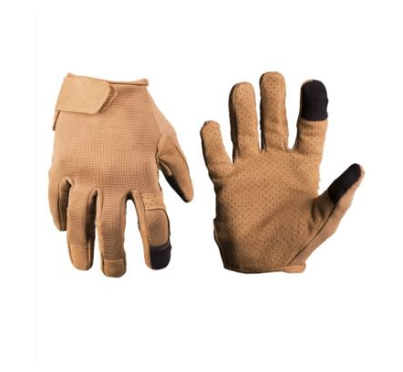
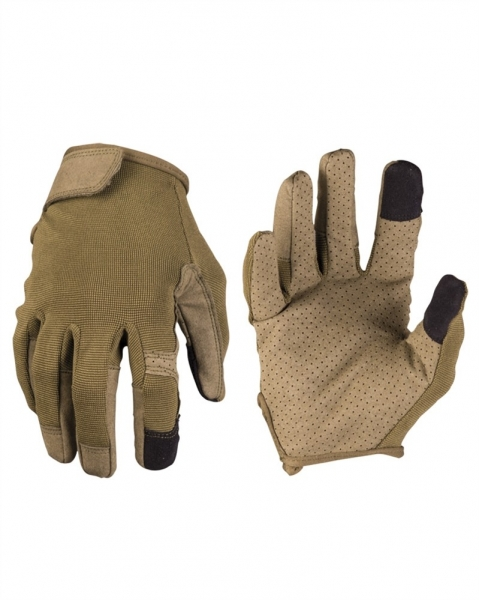
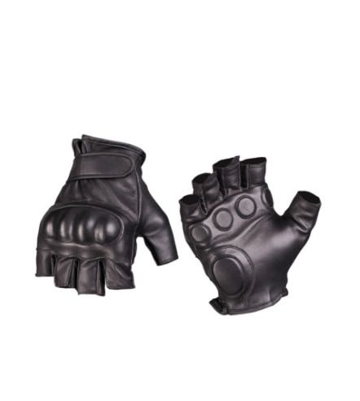

Manusi Combat Dark Coyote
40 Lei
Cod produs: M001
Descriere Produs:
Material:60% poliamidă, 40% poliuretan
Partea din spate a mana: 70% nylon, 30% elastan - insertie tactila la degetul arătător și degetul mare - ventilare in palma
manusile sunt concepute in asa fel incat pot fi folosite ca manusi de lucru cat si in utilizarea telefonelor si a comprimatelor cu ecran tactil.
carlig reglabil și buclă de inchidere pe incheietura mainii

Manusi Combat Negre
55 Lei
Cod produs: M002
Descriere Produs:
Material:60% poliamidă, 40% poliuretan Partea din spate a mana: 70% nylon, 30% elastan - insertie tactila la degetul arătător și degetul mare - ventilare in palma - manusile sunt concepute in asa fel incat pot fi folosite ca manusi de lucru cat si in utilizarea telefonelor
si a comprimatelor cu ecran tactil. - carlig reglabil și buclă de inchidere pe incheietura mainii

Manusi de Piele Tactil Negre
85 Lei
Cod produs: M003
Descriere Produs:
100% piele de capra
Protecția pentru articulatii:
100% Capitonate spuma EVA in palma si la incheietura.
- mansetă scurta inchidere reglabila pe incheietura mainii
- piele foarte moale